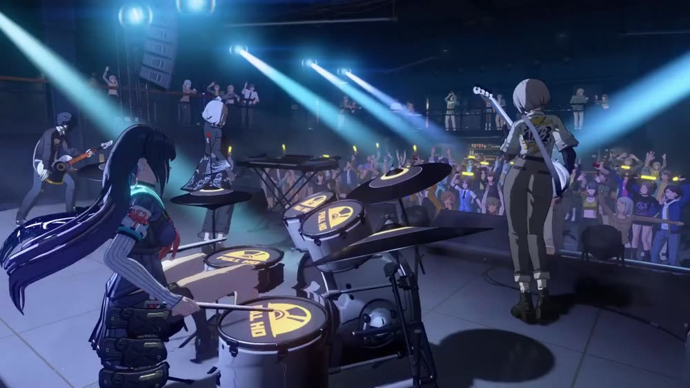

Accueil / Lore
Le lore d'Ananta : villes, anomalies et mystères
Une ville moderne, des phénomènes surnaturels et une pointe d'humour décalé. Voici l'univers du jeu.
Nova City
Nova City est une métropole moderne et animée. Son ambiance mêle Tokyo et Los Angeles.
C'est la première ville du jeu. Tu y incarnes le ou la Capitaine, nouvelle recrue d'une équipe spéciale. Les enquêteurs de la NCCA, la Nova City Crime Agency, y travaillent.
D'après PC Gamer, Lykaia dirige la NCCA et occupe aussi le poste de Première ministre de la ville. La presse cite aussi des activités du quotidien : courses, salle de sport, salles d'arcade, boutiques de vêtements et personnalisation de logement.
Sources : site officiel et PC Gamer. Ces détails peuvent évoluer d'ici la sortie.
Chongxiao et Lingyun City
Chongxiao est la seconde ville du jeu. Elle a été révélée le 25 août 2026 dans la bande-annonce de la date de sortie.
Lingyun City y offre une ambiance plus calme. Elle s'inspire de villes chinoises modernes, avec des lacs, de la verdure et une architecture traditionnelle. D'après la presse, Hangzhou sert de référence.
Selon Game Informer, la ville se visite librement : salles de sport, restaurants, salons de mahjong, cafés à chats, boutiques et sources chaudes. Plus de 100 personnages non joueurs y ont leur propre histoire et leurs quêtes annexes.
Sources : Game Informer, PC Gamer et GamesBeat.

Anomalies et phénomènes surnaturels
Des phénomènes surnaturels et des anomalies menacent la ville. Une organisation d'enquêteurs intervient : la NCCA, la Nova City Crime Agency.
Un ton entre mystère et humour décalé
L'univers mélange le mystère et l'humour décalé. D'après PC Gamer, le jeu penche surtout vers l'humour, avec un système de réseaux sociaux et d'abonnés lié à ton équipe. Le premier dévoilement, en 2023, avait un ton plus sérieux.
De Project Mugen à Ananta
Le projet a été présenté en août 2023 sous le nom de Project Mugen. Il a pris le nom Ananta fin 2024. Naked Rain travaille avec des studios à Hangzhou et à Montréal, d'après GamesBeat.
Une théorie à partager ?
Le lore se discute sur notre serveur. Viens partager tes idées avec la communauté.
Débats du lore avec la communauté
Théories, analyses et questions : les fans d'Ananta en parlent sur le Discord.